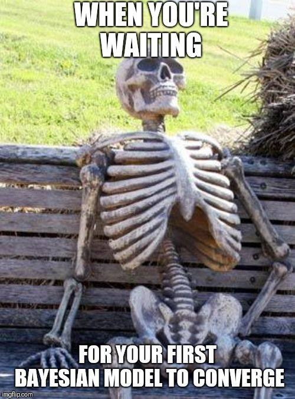
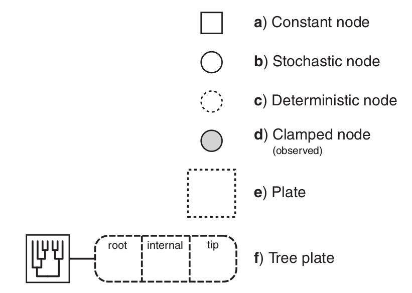
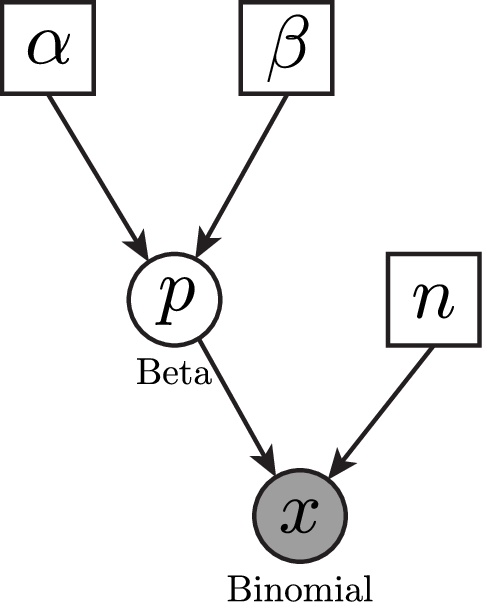

Apuntes sobre RevBayes
Introducción a la Inferencia Bayesiana
La inferencia bayesiana es un enfoque de la estadística que permite actualizar nuestras creencias sobre un parámetro desconocido a medida que obtenemos nueva información. Se basa en el Teorema de Bayes, que nos dice cómo combinar la información previa con la evidencia observada.
El Teorema de Bayes se expresa matemáticamente como:
\[ P(\theta | D) = \frac{P(D | \theta) P(\theta)}{P(D)} \]
Donde: \(P(\theta | D)\) es la probabilidad posterior del parámetro \(\theta\) después de observar los datos \(D\)
\(P(D | \theta)\) es la verosimilitud, la probabilidad de los datos \(D\) dados un valor del parámetro \(\theta\).
\(P(\theta)\) es la distribución prior, que refleja nuestra creencia sobre \(\theta\) antes de observar los datos
\(P(D)\) es la evidencia, un factor de normalización que garantiza que la probabilidad total sea 1.
El objetivo de la inferencia bayesiana es calcular la distribución posterior, que nos proporciona una estimación más precisa del parámetro \(\theta\) al incorporar tanto datos como conocimiento previo.
Diferencia entre Inferencia Bayesiana y Máxima Verosimilitud
| Enfoque | Máxima Verosimilitud (MV) | Inferencia Bayesiana |
|---|---|---|
| Pregunta clave | ¿Cuál es el valor de \(\theta\) que maximiza la probabilidad de los datos? | ¿Cómo cambia nuestra creencia sobre \(\theta\) después de observar los datos? |
| Ecuación base | \[ \hat{\theta} = \arg\max_{\theta} P(D | \theta) \] | \[ P(\theta | D) \propto P(D | \theta) P(\theta) \] |
| Uso de información previa? | ❌ No | ✅ Sí (usa una distribución prior) |
| Resultado | Un solo valor óptimo para \(\theta\) | Una distribución completa sobre \(\theta\) |
| Estimación de incertidumbre? | ❌ No la estima | ✅ Sí, con la distribución posterior |
| Flexibilidad con nuevos datos? | ❌ No se actualiza fácilmente | ✅ Se actualiza dinámicamente con más datos |
¿Qué es RevBayes?
A diferencia de otros programas, RevBayes se basa en un lenguaje declarativo y probabilístico, lo que permite definir modelos gráficos y realizar inferencia mediante Markov Chain Monte Carlo (MCMC).
Principales características de RevBayes:
Utiliza modelos gráficos probabilísticos.
Tiene una sintaxis similar a R, pero con mayor enfoque en la inferencia bayesiana.
Permite definir relaciones entre variables mediante nodos.
Utiliza muestreo MCMC para estimar distribuciones posteriores.
¿Qué es el Muestreo MCMC?
El Muestreo MCMC (Markov Chain Monte Carlo) es un conjunto de métodos computacionales utilizados para aproximar distribuciones de probabilidad complejas, especialmente en inferencia bayesiana y problemas donde el espacio de parámetros es muy grande.
¿Por qué se necesita MCMC?
En inferencia bayesiana, la distribución posterior de un parámetro \(\theta\) se calcula usando:
\[ P(\theta | D) = \frac{P(D | \theta) P(\theta)}{P(D)} \]
Pero en la práctica, el denominador \(P(D)\) es difícil de calcular, ya que requiere integrar sobre todos los valores posibles de \(\theta\):
\[ P(D) = \int P(D | \theta) P(\theta) d\theta \]
Cuando el espacio de parámetros es muy grande, esta integral es imposible de resolver analíticamente. MCMC nos ayuda a aproximar la distribución posterior sin necesidad de calcular \(P(D)\).
¿Cómo funciona MCMC?
MCMC simula valores de los parámetros siguiendo estos pasos:
Empieza en un valor inicial .
Propone un nuevo valor basado en una distribución de transición.
Decide si acepta o rechaza según la regla de aceptación.
Repite el proceso muchas veces para construir una cadena de valores que sigan la distribución posterior.
🔹 Importante:
Con suficientes iteraciones, la cadena converge a la distribución posterior, permitiendo estimar parámetros de manera precisa.
Métodos populares de MCMC
Existen varias formas de implementar MCMC. Las más comunes son:
✅ 1. Algoritmo de Metropolis-Hastings
Propone un nuevo valor \(\theta^*\).
Decide si lo acepta o no comparando la razón de aceptación:
\[ r = \frac{P(D | \theta^*) P(\theta^*)}{P(D | \theta) P(\theta)} \]
- Si \(r \geq 1\), acepta \(\theta^*\).
- Si \(r < 1\), acepta \(\theta^*\) con probabilidad \(r\).
Se usa cuando no se conoce la forma exacta de la distribución posterior.
¿Cómo saber si una cadena ha convergido?

Algunas técnicas comunes para evaluar la convergencia incluyen:
Inspección visual de trazas: un gráfico de trazas muestra si la cadena ha alcanzado un comportamiento estable sin tendencias obvias.
Tamaño de muestra efectivo (Effective Sample Size, ESS): Dado que las muestras en MCMC están correlacionadas, el número real de muestras independientes es menor que el número total de iteraciones. El tamaño de muestra efectivo (ESS) estima cuántas muestras independientes equivalentes hay en la cadena.
Se calcula como:
\[ ESS = \frac{N}{1 + 2 \sum \rho_k} \]
Donde \(N\) es el número total de iteraciones y \(\rho_k\) es la autocorrelación en el retraso \(k\). Un ESS alto (\(ESS > 200\)) indica que la cadena ha explorado bien el espacio de parámetros y proporciona estimaciones confiables.
Un ESS bajo sugiere que las muestras están altamente correlacionadas y que se necesitan más iteraciones o una mejor parametrización del algoritmo para obtener estimaciones más precisas.
Para visualizar estos valores y generar gráficos, se puede utilizar Tracer, una herramienta que facilita el análisis de convergencia de cadenas MCMC. Se puede descargar en el siguiente enlace:
Modelos Gráficos en RevBayes
En RevBayes, un modelo gráfico representa la relación entre variables aleatorias en un modelo bayesiano. Cada variable en el modelo es representada por un nodo, y las relaciones entre ellas se representan como bordes en un grafo.

Tipos de Nodos en RevBayes
👉 Nodos Constantes
Son valores fijos dentro del modelo. No tienen incertidumbre.
n = 10 # Número de observaciones👉 Nodos Estocásticos
Representan variables aleatorias con una distribución. Son los parámetros del modelo.
theta ~ dnBeta(2,2) # Prior Beta(2,2)En este caso, theta es una variable aleatoria con una distribución Beta.
👉 Nodos Deterministas
Son valores calculados a partir de otros nodos.
mu := theta * n # Media esperadaAquí, mu se calcula a partir de theta y n.
👉 Nodos Clamped (Observados)
Se utilizan para fijar valores observados en el modelo.
D ~ dnBinomial(n, theta) # Modelo Binomial
D.clamp(7) # Observamos 7 éxitosEn este caso, D es una variable aleatoria Binomial, pero la fijamos en 7.
👉 Nodos Plate
Los plates se usan para repetir estructuras en modelos jerárquicos.
for (i in 1:10) {
theta[i] ~ dnBeta(2,2)
}Aquí, estamos creando 10 valores de theta, cada uno con una distribución Beta(2,2).
Comparación entre RevBayes y R
RevBayes tiene una sintaxis similar a R, pero existen diferencias clave:
| Característica | RevBayes | R |
| Declaración de variables | theta ~ dnBeta(2,2) |
theta <- rbeta(1, 2, 2) |
| Estructuras de control | for (i in 1:10) {} |
for (i in 1:10) {} |
| Funciones definidas | function myFunc(x) { return(x^2) } |
myFunc <- function(x) { x^2 } |
| Asignación de valores | := para deterministas, = para constantes |
<- para todo |
| Inferencia Bayesiana | Integrada con mcmc() |
Necesita paquetes adicionales |
📊 Ejemplo Micheladas en Tepito
Queremos estimar la probabilidad ( p ) de que un estudiante disfrute del ambiente en las micheladas en Tepito.
Hemos recopilado información de estudiantes que visitaron el lugar:
✔️ 10 estudiantes fueron encuestados
✔️ 7 estudiantes disfrutaron el ambiente, 3 no lo disfrutaron
✔️ Queremos estimar la probabilidad de que tú, como nuevo visitante, disfrutes del ambiente.
🔹 1. Definiendo el Modelo en RevBayes
📌 Distribución Prior
Antes de ver los datos, asumimos una creencia previa sobre la probabilidad ( p ).
Utilizamos una distribución Beta(8,2), basada en la suposición de que aproximadamente el 80% de las personas disfrutarán del ambiente.
\[ p \sim \text{Beta}(8,2) \]
Página para visualizar las distribuciones para RevBayes, pega el siguiente código en Rev code:
x ~ dnBeta(8, 2)La media de esta distribución es:
\[ E[p] = \frac{\alpha}{\alpha + \beta} = \frac{8}{8+2} = 0.8 \]
📌 Verosimilitud (Likelihood)
La verosimilitud describe la probabilidad de observar los datos dados un valor específico de ( p ).
Como cada estudiante puede estar satisfecho (éxito) o insatisfecho (fracaso), usamos una distribución Binomial:
\[ k \sim \text{Binomial}(n = 10, p) \]
Donde: - ( k = 7 ) es el número de estudiantes satisfechos observados. - ( n = 10 ) es el número total de encuestados.
📌 Posterior Bayesiana
Aplicamos el Teorema de Bayes:
\[ P(p | D) \propto P(D | p) P(p) \]
Dado que usamos un prior Beta y una verosimilitud Binomial, la posterior también sigue una distribución Beta con parámetros actualizados:
\[ p | D \sim \text{Beta}(8+7, 2+3) = \text{Beta}(15,5) \]
La media de la posterior nos da la mejor estimación después de observar los datos:
\[ E[p] = \frac{15}{15 + 5} = 0.75 \]
Esto significa que, después de observar que 7 de 10 estudiantes disfrutaron el ambiente, nuestra mejor estimación de la probabilidad de que tú disfrutes del ambiente es 75%.
🔹 2. Código en RevBayes
A continuación, presentamos el código en RevBayes para implementar este modelo y ejecutar un análisis MCMC.

# ------------------------------------------------
# RevBayes - Algoritmo de Metropolis-Hastings para estimar
# la probabilidad de disfrutar el ambiente en las micheladas de Tepito
# ------------------------------------------------
# Datos observados
total_clientes <- 10 # Número total de encuestados
satisfechos <- 7 # Número de estudiantes que disfrutaron el ambiente
# Especificar la distribución prior
alpha <- 8 # Basado en la creencia previa de 80% satisfacción
beta <- 2 # Complemento del prior
p ~ dnBeta(alpha, beta) # Prior Beta(8,2)
# Definir la propuesta de MCMC con Metropolis-Hastings
moves[1] = mvSlide(p, delta=0.1, weight=1) # Movimiento en la distribución de p
# Especificar el modelo de verosimilitud (distribución Binomial)
k ~ dnBinomial(p, total_clientes)
k.clamp(satisfechos) # Fijar la observación de 7 estudiantes satisfechos
# Crear el modelo
my_model = model(p)
# Definir monitores para el MCMC
monitors[1] = mnModel(filename="micheladas_MH.log", printgen=10, separator = TAB) # Guardar resultados
monitors[2] = mnScreen(printgen=100, p) # Mostrar progreso cada 100 generaciones
# Crear el análisis MCMC con Metropolis-Hastings
analysis = mcmc(my_model, monitors, moves)
# Ejecutar el MCMC con 100,000 iteraciones
analysis.run(100000)
# Mostrar el resumen de los operadores de MCMC
analysis.operatorSummary()Mini-ejercicio
Crea un script para RevBayes (
.Rev) utilizandoVisual Studio Codey copia el codigo.Modifica el prior
dnBeta(alpha, beta)con los valores que reflejen tu creencia sobre la probabilidad de satisfacción.Guarda el archivo
micheladas_MH.logen la carpeta asiganada para guardar resultados.Guarda el script en la carpeta de
scripts.Ejecuta el análisis MCMC en RevBayes.
Visualiza los resultados usando
Tracerpara observar la distribución posterior.